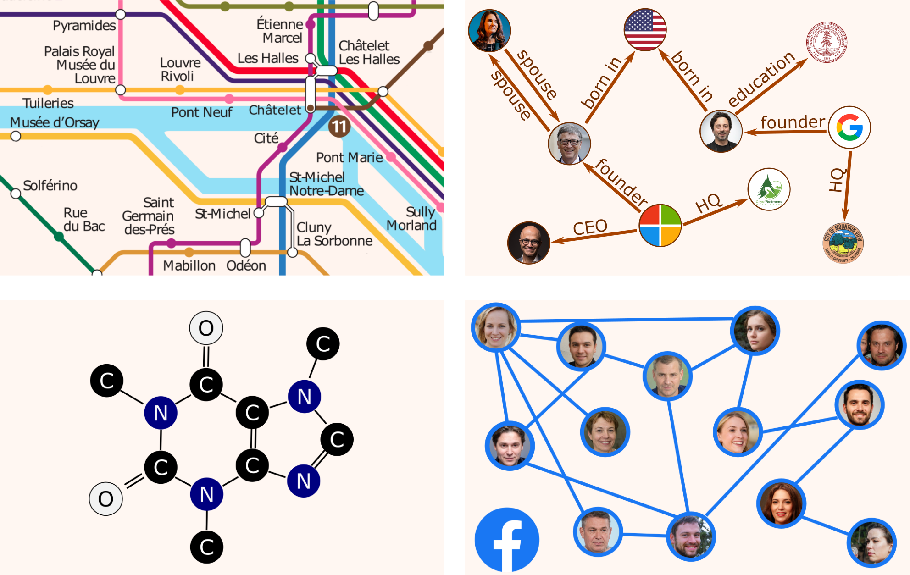

Why graphs?
Graphs are among the most versatile data structures, thanks to their great expressive power. In a variety of areas, Machine Learning models have been successfully used to extract and predict information on data lying on graphs, to model complex elements and their relations. Here are just some examples.
- Traffic patterns forecasting on road networks
- Inferring missing information in a Knowledge Graph
- Predicting protein interactions for drug discovery
- Recommender systems based on social networks data

More generally, quite a few different Machine Learning tasks can be addressed when working on graphs.
- Graph Classification — given a graph, predict to which of a set of classes it belongs
- Node Classification — given a graph with incomplete node labelling, predict the class of the remaining nodes
- Link Prediction — given a graph with incomplete adjacency matrix, predict for each pair of nodes whether they are connected
- Community Detection (a.k.a. Graph Clustering) — given a graph, partition its nodes into clusters based on its edge structure
- Graph Embedding — given a graph, map it into a vector while preserving relevant information
- Graph Generation — learn a distribution a set of given graphs, and sample from this distribution to generate new similar graphs
Unfortunately, graph data are non-structured and non-Euclidean, so building Machine Learning models to solve these tasks is not immediately evident. One the one hand the connections between nodes carry essential information, on the other hand it is not trivial to find a way to process this kind of information.
In this post we will see how the problem can be solved using Graph Convolutional Networks (GCN), which generalize classical Convolutional Neural Networks (CNN) to the case of graph-structured data. The main sources for this post are the works of Kipf et al. 2016, Defferrard et al. 2016, and Hammond et al. 2009.
Why convolutions?
Convolutional neural networks (CNNs) have proven incredibly efficient at extracting complex features, and convolutional layers nowadays represent the backbone of many Deep Learning models. CNNs have been successful with data of any dimensionality:
- in 1D, to process audio signals — e.g. for sound classification
- in 2D, to process images — e.g. for early caries detection
- in 3D, to process scans — e.g. for MRI brain registration
What makes CNNs so effective is their ability to learn a sequence filters to extract more and more complex patterns. In particular, these convolutional filters are characterized by their compact support, and by the property of being translation-invariant.
With a little inventiveness, we can apply these same ideas on graph data. What makes the problem harder than when dealing with Euclidean data (1D, 2D, or 3D ) is that translation on irregular graphs is an meaningless concept, so that twe we need to find another way to define graph convolution.
Defining graph convolution
On Euclidean domains, convolution is defined by taking the product of translated functions. But, as we said, translation is undefined on irregular graphs, so we need to look at this concepts from a different perspective.
The key idea is to use a Fourier transform. In the frequency domain, thanks to the Convolution Theorem, the (undefined) convolution of two signals becomes the (well-defined) component-wise product of their transforms. So, if knew how to compute the Fourier transform of a function defined on a graph, we could define convolution as

This leads us to the next question: how do we define a graph Fourier transform?
We will find this problem by working in analogy with the classical Fourier transform. Let's take the case of a function defined on the real line. Its Fourier transform is its decomposition in frequency terms, obtained by projecting the function on an orthonormal basis of sinusoidal waves. And in fact, these waves are precisely the eigenfunctions of the Laplacian:
So if we generalize this idea, we can define the Fourier transform of a function as its projection on an orthonormal basis of eigenfunctions of the Laplacian:
In graph theory, the Laplacian matrix is defined as L = D-A, where
- D, the degree matrix, is the diagonal matrix containing the number of edges attached to each vertex;
- A, the adjacency matrix, indicates for each pairs of vertices whether they are connected by an edge.
Since a picture is worth a thousand words, let's see what all this means with concrete examples. If we take the graph corresponding to the Delauney triangulation of a regular 2D grid, we see that the Fourier basis of the graph correspond exactly to the vibration modes of a free square membrane. This makes sense, as the basic modes of a vibrating plate are precisely the eigenfunctions of the Laplacian.
If we take a randomly generated graph, we can still (in some sense!) see the vibration modes of the graph by looking at its orthonormal Fourier basis.
Now that we know how to define a graph Fourier transform, and therefore also how to define graphs convolution, we are ready to understand the architecture of a Graph Convolutional Network!
Building the full neural network
The architecture of all Convolutional Networks for image recognition tends to use the same structure. This is true for simple networks like VGG16, but also for complex ones like ResNet.
- Features are extracted by passing the HxWxC input image through a series of localized convolution filters and pooling layers.
- The resulting feature channels are mapped into a fixed-size vector using e.g. a global pooling layer.
- Finally, a few fully-connected layers are used to produce the final classification output.
The architecture of Graph Convolution Networks follows exactly the same structure!
In the case of a GCN, our input is represented by the following elements:
- the NxC vector x containing, for each of the N nodes of the graphs, C features
- the NxN adjacency matrix
In order to fully understand the architecture shown above, we still need to clarify two last concepts: how to define pooling layers and how to guarantee that convolutions filter have compact support.
Concerning pooling layers, we can choose any graph clustering algorithm that merges sets of nodes together while preserving local geometric structures. Given that optimal graph clustering is a NP-hard problem, a fast greedy approximation is used in practice. A popular choice is the Graclus multilevel clustering algorithm.
Concerning the compact support of the convolutional filters, how we guarantee that the convolutional layers of our GCN operate locally? In general, an input x is filtered by g as
However, without further assumptions, such a filter does not have a compact support, and moreover learning all the components of ĝ(Λ) has O(N) complexity. To fix both issues, we will use instead a polynomial parametrization of ĝ of degree K:
This reduces the learning complexity to O(K), as we just need to learn θ0, ..., θK-1. And on top of that, it can be shown that ĝ is K-localized, i.e. the value at node j of ĝ centered at node i is 0 if the the minimum number of edges connecting two nodes on the graph is greater than K. Typically, K=1 is often used, which corresponds to 3x3 convolutional filters on images:
A final observation on computational optimization. The cost of computing the filtered signal ĝ(L)x is still as high as O(N2), because of the multiplication involving U. But this cost can be reduced to O(EK) (where E is the number of edges) by expressing the polynomial in terms of Chebyshev polynomials, which have a very convenient recursive formulation.
Conclusions
- From knowledge graphs to social networks, graph applications are ubiquitous.
- Convolutional Neural Networks (CNNs) have been successful in many domains, and can be generalized to Graph Convolutional Networks (GCNs).
- Convolution on graphs are defined through the graph Fourier transform.
- The graph Fourier transform, on turn, is defined as the projection on the eigenvalues of the Laplacian. These are the "vibration modes" of the graph.
- As for traditional CNNs, a GCN consists of several convolutional and pooling layers for feature extraction, followed by the final fully-connected layers.
- To ensure that the convolutional filters have compact support, we use a polynomial parametrization. Chebyshev polynomials allow to reduce the computational complexity.